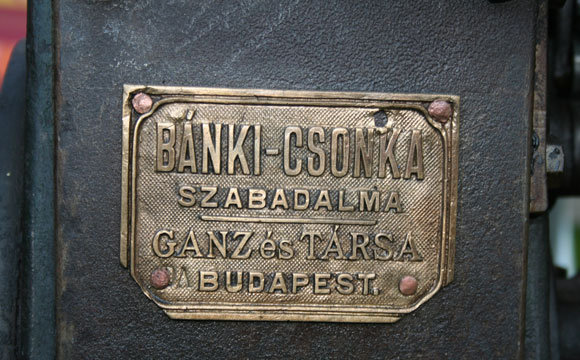
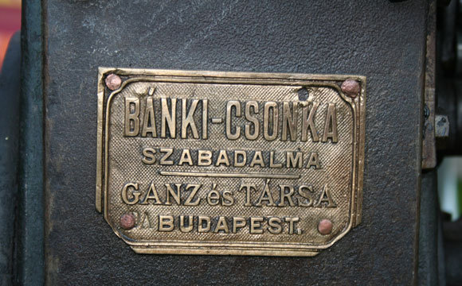

Magyar Elsők – Bánki Donát
Bánki Donát (Bakonybánk, 1859. június 6. – Budapest, 1922. augusztus 1.) eredeti neve Lőwinger Donát, korának egyik legnagyobb gépészmérnöke, feltalálója, egyetemi tanár.
Szülei dr. Lőwinger Ignác és Salzer Berta (Betti). Édesapja körorvos volt és az 1848–49-es forradalom és szabadságharc kitöréskor fiatal házasként is jelentkezett a szerveződő honvédségbe, ahol főorvosként a fegyverletételig szolgált. Édesapja honvédtiszti előélete is közrejátszott abban, hogy a család zsidó származása mellett magyar hazafias nevelést adott a gyermekeknek. Donát negyedik gyermekként született és később, mikor már hatan voltak testvérek átköltöztek Lovászpatonára. 1879-ben már egyetemistaként magyarosította a nevét és szülőhelye iránti tisztelete miatt választotta a Bánki nevet.
Bánki Donát, korának egyik legnagyobb gépészmérnöke, feltalálója.
A budapesti Műegyetemen szerzett gépészmérnöki diplomát. Az iparban helyezkedett el szerkesztőmérnökként (MÁV gépgyár, majd Ganz-gyár). Az egyetemen 1879–80-ban a műszaki mechanika tanszéken tanársegéd volt, majd 1899-től haláláig a hidrogépek, kompresszorok és gőzturbinák szerkezettanának professzora.
Munkássága
Munkássága szorosan összekapcsolódott Csonka Jánossal, akivel együtt 1890-re kifejlesztették az ún. Bánki-Csonka motort, amely a Ganz-gyár nemzetközileg is versenyképes terméke volt. A Pallas nagy lexikona szerzőinek egyike volt 1893-tól. 1893. február 11-én Csonkával együtt szabadalmaztatta a fúvókás benzinkarburátort (porlasztót), megelőzve ezzel a külföldön általánosan úttörőnek tartott Wilhelm Maybachot. 1894-ben szabadalmaztatta az első nagynyomású robbanómotort, a saját korában méltán világhírű Bánki-motort, amelynél a robbanókeveréket a hengerbe porlasztott vízzel hűtötte le, s ezzel a motor hatásfokát korábban nem remélt mértékben sikerült fokoznia.
 

Mind a kompresszió-növelés, mind a vízbefecskendezés elsőként Bánki által tisztázott elvét később is alkalmazták, bár a Bánki-motor elterjedését a néhány évvel később megjelent dízelmotor megakadályozta. Az általa 1917-ben feltalált Bánki-turbina új utakat nyitott a törpe vízierőművek fejlesztésében. 1918-ban nagyszabású tervet dolgozott ki a Vaskapu vízerejének hasznosítására.
A Magyar Tudományos Akadémia levelező tagja volt 1911-től. A vízturbináért Bánkit halála után négy évvel 1926-ban a Magyar Tudományos Akadémia nagyjutalmával tüntette ki. Irat- és kézirathagyatékának nagy része a BME OMIKK Levéltárában található. Jelentős gépszerkesztői munkássága, szabadalmi tevékenysége mellett nagy hivatástudattal látta el oktatói tevékenységét. Nagy hangsúlyt fektetett arra, hogy hallgatói felkészülését előadási jegyzetekkel is segítse. Egyetemi tanári tevékenysége során a mérnökképzésben bevezette a laboratóriumi képzést.

Bánki Donát munkásságát, alkotásait áttekintve az utókor csodálattal adózik tevékenységének. 1922. augusztus 1-én alkotó ereje teljében elhunyt tudós 136 hazai és külföldi publikációt hagyott hátra az utókor számára. Pályafutását példaképül állíthatjuk minden mérnök, az alkotó műszaki értelmiség elé.